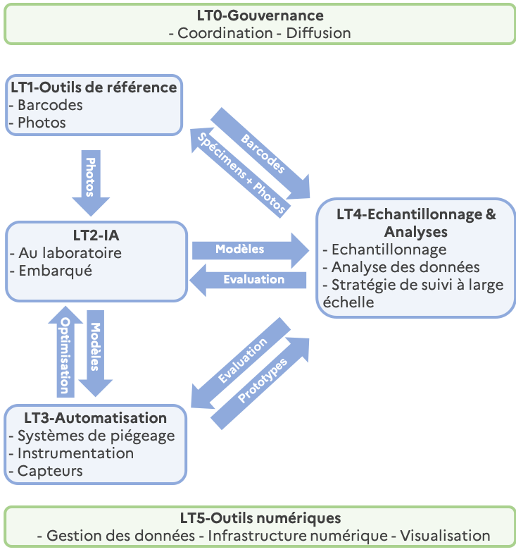

Lots de travaux
Lots de travaux

LT0 – Coordination du projet et diffusion des résultats
Coordination : Carole Kerdelhué (CBGP)
LT0 correspond à la coordination générale du projet et à la diffusion des résultats. Il sera dirigé par la responsable du projet.
LT1 – Développement des bases de données de référence pour la création d’un ensemble d’outils pour l’identification
Coordination : Jean-Claude Streito (CBGP) & Mélodie Ollivier (DYNAFOR)
Objectifs : Développer des ressources partagées nécessaires à l’identification fiable des insectes. Deux bases de données seront générées.
Tâche 1.1 – Base de données pour l’identification moléculaire des spécimens (barcoding) validée par des taxonomistes, compatible avec la base internationale Barcode of Life (BOLD).
Tâche 1.2 – Base de données de photographies de référence annotées par des experts destinée à l’entraînement des outils d’intelligence artificielle (IA).
Le consortium dispose d’une expertise approfondie en caractérisation taxonomique et développe des bases de données depuis plus de dix ans. L’extraction non destructive et la prise de photographies de haute qualité permettront de préserver les spécimens tout en assurant une identification fiable.
Interactions avec les autres LTs : LT1 fournira les ressources nécessaires au LT2 pour l’entraînement et l’évaluation des algorithmes d’IA, et aux LT3 et LT4 pour l’identification par eDNA et barcoding individuel des spécimens collectés sur le terrain. Le développement des bases de données sera réalisé en collaboration avec le LT5.
Tâche 1.1 – Base de données pour l’identification moléculaire des spécimens (barcoding)
- État des lieux des jeux de données existants et des spécimens disponibles.
- Génération de barcodes moléculaires pour les espèces manquantes via séquençage Sanger ou haut-débit (MiSeq).
- Exploitation des nouvelles technologies de la plateforme CBGP (PCR ultra-rapide et MinIon) pour la production massive de barcodes individuels.
Objectifs :
1. Identifier les Coléoptères collectés avec des pièges conventionnels (LT3 & LT4).
2. Développer une approche de suivi non létale basée sur l’eDNA pour les pollinisateurs (LT3 & LT4).
Étapes :
1. Évaluation des données existantes et identification des lacunes.
2. Collecte de nouveaux spécimens dans les collections institutionnelles ou sur le terrain.
3. Enrichissement des métadonnées des spécimens.
4. Séquençage ADN (CO1 et 16S), analyses bio-informatiques et validation des barcodes.
5. Publication des séquences (dataset avec DOI) sur BOLD et Arthemis https://doi.org/10.15454/TBGRIB.
Traçabilité : les vouchers seront conservés dans la collection UMR CBGP https://doi.org/10.15454/D6XAKL
Tâche 1.2 – Base de données de photographies de référence annotées par des experts
Objectifs :
1. Produire des photographies de haute qualité des spécimens de référence et des individus barcodés (Keyence VHX5000).
2. Produire entre 100 et 1000 photographies par espèce pour entraîner les algorithmes d’IA (LT2).
Sources d’images :
- Photographies disponibles chez tous les partenaires.
- Photographies validées par des experts via des programmes de science citoyenne ou des réseaux naturalistes (SpiPoll, iNaturalist, INPN Espèces…).
- Acquisition progressive de nouvelles images de qualité variable pour enrichir la base.
Méthode :
- Protocole semi-automatisé testé par EFNO (Keyence).
- Images prises par les prototypes LT3 annotées par des taxonomistes experts.
- Base de données finale disponible dans un dépôt public.
LT2 – Développement d’un flux de travail et entrainement des algorithmes d’IA pour l’identification des insectes au laboratoire et sur le terrain
Coordination : Kevin Darras (EFNO) & Blaise Mulliez (LAAS)
Objectifs : Automatiser et accélérer l’identification des insectes, en laboratoire et sur le terrain, en privilégiant les méthodes non invasives et complétées par des collectes ponctuelles pour certains taxons.
Applications :
- Microscope numérique pour automatiser l’identification taxonomique en laboratoire.
- Systèmes embarqués LT3 pour trier et transmettre automatiquement les images contenant les groupes cibles.
Interactions avec les autres LTs : LT2 utilisera les ressources développées dans LT1 et analysera les données issues des LT3 et LT4.
Tâche 2.1 – Tri et identification automatique des insectes au laboratoire
- Étape 1 : entraînement de modèles de détection d’objets pour trier les spécimens par ordre ou famille.
- Étape 2 : développement de modèles d’IA pour l’identification au niveau espèce sur les groupes cibles (ResNET50, EfficientNet).
Tâche 2.2 – Modèles de vision embarquée pour l’identification non léthale des insectes piégés sur le terrain
- Entraînement de modèles pour caméras Raspberry-Pi et OpenMV basse consommation.
- Approches ROI comparées aux algorithmes FOMO et YOLO nano, éventuellement combinées avec classification d’images.
- Résultats de l’identification des espèces transmis sans fil.
- Utilisation de lentilles optiques et miroirs pour capturer différents angles et améliorer l’identification.
LT3 – Optimisation des stratégies de piégeage et développement des capteurs de suivi
Coordination : Adam Quotb (LAAS) & Emilie Andrieu (DYNAFOR)
Objectifs : Développer de nouveaux outils permettant de suivre les communautés d’insectes de manière semi-automatisée. Nous mettrons en place un système multi-capteurs et multi-pièges permettant un suivi standardisé et semi-automatisé de la diversité et de la phénologie des insectes tout en limitant l’empreinte carbone (IA embarquée, collecte de données à distance). L’objectif est d’améliorer la détection, l’identification et le comptage multi-taxon des insectes sur le terrain en s’appuyant sur les méthodes d’apprentissage profond développées dans le LT2 et sur une stratégie multi-capteurs (météo, géolocalisation, images et optoélectronique).
Liens avec les autres LT : LT3 utilisera les modèles d’IA développés dans le LT2 et fournira les prototypes des pièges multi-capteurs qui seront déployés dans le LT4.
Tâche 3.1 – Optimisation des systèmes de piégeage et des attractifs pour le suivi à long terme
Le choix du système de piégeage dépend des caractéristiques de vol des espèces cibles et de la capacité des pièges à guider les individus vivants à travers la chambre de capture située dans le système intelligent d’analyse d’images embarqué développé à la tâche 3.2.
Sur la base des résultats préliminaires, nous avons sélectionné :
- des pièges de type Lindgren noir et vert pour les Coléoptères,
- des pièges de type malaise pour les pollinisateurs.
Ces deux systèmes seront adaptés aux contraintes des écosystèmes forestiers : taille et robustesse (présence de grands mammifères, sous-bois), emplacement (au sol ou suspendu aux branches) et facilité d’installation par du personnel non expert.
Pour augmenter les captures d’insectes cibles, deux types d’attractifs (visuel et olfactif) seront testés sur le terrain dès la première année, en évaluant à la fois leur efficacité et leur facilité d’utilisation pour chaque type de piège.
Une fois dans le piège (chute par gravité pour les Coléoptères, vol orienté pour les pollinisateurs), les insectes devront passer par une chambre de capture pour être dirigés correctement. Ce système de guidage sera développé et adapté à chaque type de piège afin de permettre le passage devant le laser et devant l’objectif optique, garantissant ainsi la meilleure capture d’image possible.
Caractéristiques des prototypes de piège :
- un système spécifique sera ajouté aux pièges à Coléoptères pour collecter les spécimens et évaluer la qualité de l’identification automatique basée sur l’IA, le barcoding moléculaire et l’expertise taxonomique.
- un système de collecte des traces d’ADN (poils, etc.) sera intégré à la chambre de sortie des pièges à pollinisateurs afin de différencier les espèces cryptiques via l’analyse d’eDNA.
Tâche 3.2 – Développement d’un système d’analyse d’image embarqué pour le suivi à long terme
Ce système intelligent embarqué consiste en une carte électronique permettant l’acquisition d’images (Raspberry Pi ou openMV) et le traitement embarqué des images capturées grâce aux modèles d’IA développés dans le LT2.
Il comprend :
- des périphériques externes pour la capture d’images et des mesures climatiques (température, humidité, etc.)
- des LEDs pour éclairer le champ de vision
- un capteur laser pour détecter le passage des insectes et déclencher la caméra
- un système de communication local (Wi-Fi + GSM)
- des adaptations mécaniques pour interfacer les pièges développés à la tâche 3.1
Les dispositifs basés sur Raspberry seront développés à partir de l’appareil Entomoscope utilisé dans l’unité SETE, et les dispositifs openMV à partir de l’appareil ecoEye développé à EFNO.
Les mini-ordinateurs Raspberry et les cartes openMV peuvent effectuer la détection de zones d’intérêt de manière native en utilisant des techniques de différenciation de trames. Les Raspberry peuvent exécuter des modèles de détection d’objets à petite échelle (YOLO nano), tandis que les dispositifs OpenMV, sans système d’exploitation, nécessitent des bibliothèques spécifiques pour exécuter des modèles IA basés sur TensorFlow Lite (libtflm) ou MobileNet V2 pour FOMO.
Des batteries couplées à un système de recharge solaire assureront l’alimentation à long terme du système.
Calendrier et déploiement : Durant les 18 premiers mois du projet, les tâches 3.1 et 3.2 seront menées en parallèle. À l’issue de cette période, 9 prototypes seront livrés aux membres du consortium pour des tests en conditions réelles dans les sites URZF, EFNO et DYNAFOR. Une fois les prototypes validés, une seconde version pour un déploiement à grande échelle (100 à 150 unités) sera développée par LAAS et EFNO et remise au consortium pour déploiement sur les sites pilotes du LT4.
LT4 – Conception et mise en œuvre de la stratégie d’échantillonnage et de la chaîne d’analyse des données
Coordination : C. Bouget (EFNO) & J.-P. Rossi (CBGP)
Objectifs :
- Tester les pièges multi-capteurs et les outils d’identification des insectes en conditions forestières réelles.
- Proposer un ensemble d’outils statistiques (sous forme de package R) pour analyser les communautés d’insectes échantillonnées avec des pièges automatiques.
- Appuyer la prise de décision pour la conception d’une stratégie nationale de suivi à grande échelle.
Liens avec les autres LT : Le LT4 exploitera les outils et ressources développés dans les LT1, LT2 et LT3.
Tâche 4.1 – Définition et implémentation du plan d’échantillonnage dans les sites pilotes
Dans un premier temps, un inventaire des jeux de données disponibles (communautés xylophages et floricoles) issus des laboratoires du consortium sera réalisé. Ces jeux de données serviront à tester la performance de différents plans prédictifs d’échantillonnage avant la production de nouvelles données spécifiques au projet.
Une fois les prototypes de pièges automatiques développés dans le LT3 disponibles, 10 sites pilotes seront sélectionnés pour un échantillonnage intensif, permettant de mesurer l’impact de la variation de l’effort d’échantillonnage sur les métriques de biodiversité (tâche 4.2), afin de concevoir la stratégie finale de suivi à grande échelle (tâche 4.3).
Ces 10 sites représenteront la diversité des forêts françaises, incluant :
- des réserves biologiques du réseau de suivi de l’ONF (Fontainebleau, Haut Tuileau, Écouves, Vallon du Maupas, Sainte-Baume…)
- des living labs du PEPR FORESTT (Chantilly, Compiègne, Landes, Briançonnais, Pyrénées ariégeoises),
- des placettes Renecofor (Fontainebleau) pour alignement avec le dispositif FP MONITOR
- des sites de suivi à long terme gérés par les partenaires du projet (ZA PyGar).
Déploiement : 150 pièges automatiques (50 multi-entonoirs verts, 50 multi-entonoirs noirs et 50 pièges à pollinisateurs) seront installés, avec 5 pièges de chaque type par site.
Évaluation : les listes d’espèces générées par trois méthodes (identification experte visuelle, barcoding ADN, analyse d’images par IA) seront comparées pour évaluer la performance du piège-photo automatique prototype. Les différences entre méthodes seront analysées à différents niveaux taxonomiques (de l’espèce aux niveaux supra-spécifiques).
Tâche 4.2 – Définition et implémentation d’une chaîne d’analyse des données : sélection des métriques et des méthodes de calcul
Nous identifierons les principales métriques de communautés à estimer, incluant :
- la richesse spécifique,
- les nombres de Hill,
- les indices de diversité fonctionnelle basés sur les bases de traits fonctionnels disponibles,
- des métriques spécifiques à l’eDNA,
- des indicateurs ciblant les espèces invasives ou ravageuses émergentes (indicateurs de risque),
- des indicateurs centrés sur les espèces patrimoniales (indicateurs de conservation).
Méthodologie :
Développement de méthodes statistiques pour calculer ces métriques et en évaluer les intervalles de confiance et biais à l’aide d’approches de randomisation (ex. bootstrap).
Implémentation sous forme de package R hébergé sur GitHub.
Application aux données issues de la tâche 4.1 et simulation de l’impact d’une réduction de l’effort d’échantillonnage par site sur les métriques et leur incertitude (raréfaction).
Intégration du package avec l’application Shiny développée dans le LT5.
Évaluation de l’impact des limites potentielles de la résolution taxonomique obtenue par les algorithmes d’IA.
Tâche 4.3 – Définition de la stratégie d’échantillonnage pour le suivi à large échelle
Objectifs : Rendre les capteurs automatiques déployables dans un réseau national de plusieurs dizaines de sites, avec un besoin minimal et peu fréquent d’intervention humaine.
À partir des résultats de la tâche 4.2, différents scénarios seront définis, reposant sur une augmentation progressive de l’effort d’échantillonnage par site, afin de :
- estimer les métriques de biodiversité,
- détecter les espèces rares ou clés,
- suivre les espèces invasives ou ravageurs émergents.
Deux stratégies de suivi à grande échelle seront proposées, correspondant à des objectifs de suivi contrastés :
- un réseau systématique de grandes placettes forestières (ex. Renecofor), déjà multi-instrumentées via le programme FP MONITOR de suivi acoustique passif
- un réseau de sites le long de gradients écologiques (ex. parcelles exploitées vs réserves) pour évaluer l’impact des stratégies de partage d’espace (land sparing) sur la conservation de la biodiversité
LT5 – Gestion des données et outils de visualisation
Coordination : Mathieu Laparie (URZF) & Wilfried Heintz (DYNAFOR) + membres du FP NUM-DATA en tant que conseillers externes.
Objectifs : Développer une stratégie logicielle reproductible, déployée sur un serveur institutionnel et portable vers d’autres infrastructures.
Les systèmes d’acquisition automatisée de données et les outils d’identification d’espèces basés sur l’IA génèrent de grands volumes de données, nécessitant une architecture logicielle robuste pour la gestion des bases de données, conçue pour :
- assurer la maintenance et l’administration à long terme
- permettre une montée en charge progressive avec l’expansion du réseau de dispositifs et l’augmentation des volumes de données
Liens avec les autres LT : Le LT5 est transversal et donc relié à l’ensemble des autres LT.
L’architecture sera optimisée pour gérer et sécuriser efficacement les données produites par les dispositifs intelligents MASSIF (5.1) tout en garantissant la pérennité du système (5.3). Un service web à authentification sera mis en place pour les membres du projet, permettant l’interrogation et l’extraction sécurisées des données. De plus, une application publique R Shiny sera développée pour fournir une interface conviviale aux fonctionnalités du package R développé dans le LT4 (5.2).
Le conteneur sera d’abord déployé sur des machines de test isolées, en collaboration avec un administrateur système expérimenté, afin de prendre des décisions éclairées sur des aspects critiques tels que l’interopérabilité des bases de données, les configurations de sécurité ou les solutions de conteneurisation pour la scalabilité et la reproductibilité. Des consultations régulières seront menées avec des experts externes, dont un ingénieur DevOps/logiciel et trois spécialistes des systèmes d’information NUM-DATA.
Tâche 5.1 – Configuration d’une infrastructure institutionnelle pour stocker, sécuriser et interroger les bases de données
Une machine virtuelle sera déployée sur un serveur d’institution publique de recherche pour centraliser et héberger les données issues des capteurs prototypes et des modèles d’IA. Les données de terrain (LT4) et les données de référence (LT1) seront stockées dans des formats de bases de données optimisés (par ex. PostgreSQL/PostGIS pour les données spatiales, SQLite pour des besoins plus légers) afin de garantir l’interopérabilité et l’efficacité des requêtes.
Dans un esprit d’open science et de reproductibilité :
- priorité sera donnée aux logiciels libres et open source (FOSS),
- l’utilisation de Git pour le versionnage sera systématique,
- une documentation publique comprenant des configurations par défaut et des scripts sera mise à disposition.
La conteneurisation (Docker ou Kubernetes) permettra de découpler l’environnement de développement du matériel, facilitant ainsi la migration fluide, la redondance et une administration pérenne et économique à travers différents groupes de recherche.
Tâche 5.2 – Développement et déploiement d’un outil web public pour l’exploration de données via les outils produits dans le LT4
Un système d’authentification web sera implémenté afin de permettre aux membres du projet d’accéder aux données hébergées et de les annoter. Une application publique R Shiny sera développée, permettant aux utilisateurs d’interagir dynamiquement avec les données de biodiversité.
Fonctionnalités principales :
- téléversement des jeux de données de suivi,
- calcul des métriques de biodiversité et statistiques associées via le package R issu du LT4.
L’outil sera dans un premier temps hébergé sur la machine virtuelle du projet pour des phases de test, puis sera déployé sur un serveur institutionnel géré par les équipes dédiées d’INRAE https://sk8.inrae.fr/00-leprojetsk8.html
Tâche 5.3 – Mise à disposition de configurations et documentations libres et Open Source pour la réplication ou la migration vers d’autres infrastructures
Tout au long du projet, des configurations complètes et une documentation ouverte seront développées pour permettre la réplication et la migration vers diverses infrastructures ou solutions auto-hébergées.
Cela inclura :
- des configurations reproductibles (basées sur la conteneurisation Docker ou Kubernetes)
- une documentation open source et versionnée afin de standardiser les configurations redondantes ou auto-hébergées
- des guides pour dimensionner les flux de données et migrer vers des centres de données supra-institutionnels, afin de réduire la dépendance vis-à-vis de partenaires spécifiques
Un accompagnement continu par les experts NUM-DATA garantira la compatibilité des choix techniques avec les bases de données d’autres initiatives nationales ou internationales de suivi de la biodiversité.
Dernière mise-à-jour : 16 septembre 2025